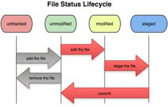
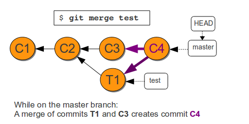
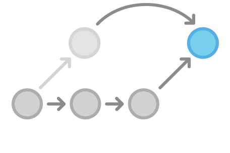
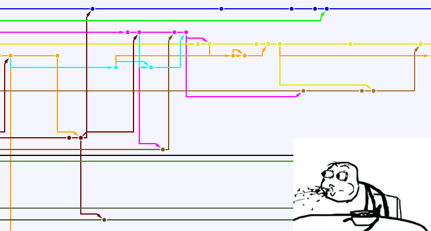

Git It Right
A Succinct Introduction to Git
Bruno Giacobo Pinto
bgpinto@inf.ufpel.edu.br | github.com/giacobo1
Universidade Federal de Pelotas (UFPel)
Laboratory of Ubiquitous and Parallel Systems (LUPS)

Agenda
- Histórico
- Introdução
- Conceitos Fundamentais
- Trabalhando Localmente
- Branches
- Analisando Logs
- Trabalhando Remotamente
- Conflitos
- Workflows
- Submodules
- Referências

Histórico
Sistemas de controle de Versão (VCS)
Um VCS é um sistema para registrar mudanças em arquivos ao longo do tempo de forma que versões especificas possam ser recuperadas, analisadas e alteradas.
VCS Locais
No início, utilizava-se mecanismos como cópias de arquivos em diretórios diferentes. Essa abordagem, porém, era ineficiente e suscetível a erros.
Automatizar o Processo
Havia a necessidade, então, de um sistema que gerenciasse diferentes versões de arquivos.
RCS e Patches
Nesse sentido, RCS VCS foi um dos primeiros a se popularizar. Esse sistema gerava patches (diferenças entre versões de arquivos) e os guardava em um formato especial no disco.
Necessidade por Colaboração
Devido a complexidade crescente que alguns projetos apresentavam, a demanda por meios de colaborar surgiu e passou a ser incorporado por VCSs.
VCS Centralizados
Surgem, então, os primeiros VCS centralizados. Esses sistemas guardam todas as versões de arquivos em um servidor central.
VCS Centralizados
Antes do aparecimento do Git, VCS centralizados eram o padrão de fato.
Exemplos de VCS Centralizados
- CVS
- Subversion
- Perforce
Desvantagens dos VCS Centralizados
- Intolerância a falhas
- Servidor
- Disco Rígido
- Conexão Com a Rede
- Inflexível
- Lento
- Sem Isolamento
VCSs Distribuídos
Para contrapor os problemas apresentados por VCSs centralizados, surgem os VCS que operam de forma distribuída.
VCS Distribuídos
Nesse tipo de VCS, cada desenvolvedor do projeto possui uma cópia local completa do projeto. Isso não só torna trivial a recuperação de eventuais falhas, como também possibilita diversas estratégias de colaboração (mais em Workflows).
Exemplos de VCSs Distribuídos
- Git
- Mercurial
- Bazaar
- Darcs
Como Surgiu o Git
Até 2002, o desenvolvimento do kernel Linux era administrado por meio de patches arquivados em disco e e-mails. No ano seguinte, a comunidade de desenvolvodores decidiu migrar para um DVCS chamado BitKeeper.
Como Surgiu o Git
Após desentendimentos entre a comunidade de desenvolvedores do kernel Linux e a BitKeeper em 2005, a comunidade decidiu abandonar o uso desse serviço e implementar seu próprio VCS.
Como Surgiu o Git
Para acomodar adequadamente projetos de grande escala como o kernel Linux, o novo VCS deveria atender as seguintes exigências:
- Velocidade
- Simplicidade
- Suporte a fluxo não linear de desenvolvimento
- Totalmente Distribuído
- Capaz de lidar com grande volume de dados
Assim surgia, em 2005, um VCS chamado Git.
Introdução
O que é, exatamente, o Git?
Git é um VCS distribuído Open-Source, multi-plataforma, leve a altamente eficiente. Normalmente, Git é disponibilizado como ferramenta de linha de comando.
Um Pouco Além de um VCS
Pode-se argumentar que Git oferece um pouco mais que só VCS, pois o sistema permite:
- Documentar o andamento do projeto por meio de commits
- Plataforma colaborativa para desenvolvimento
- Suporte a correção de bugs em softwares
- Realizar auditorias em um projeto
"Hubs"
Devido a popularidade do Git, algumas plataformas de colaboração surgiram e adicionaram um "aspecto" social ao estender as funcionalidades originais dessa ferramenta.
Exemplo de "Hubs" Populares
Instalando o Git no Linux
Via gerenciador de pacotes no Fedora:
$ sudo yum install gitVia gerenciador de pacotes em sistemas Debian-like:
$ sudo apt-get install gitOutros meios de instalações em:
http://git-scm.com/download/
Configurações do Git
Git possui 3 níveis de configurações que são manipulados pela ferramenta config da seguinte forma:
- Configurações do Git para todos os usuários do sistema
$ git config --system Atributo "Valor" - Configurações do Git específicas a um usuário
$ git config --global Atributo "Valor" - Configurações do Git específicas ao repositório do projeto
$ git config --local Atributo "Valor" Configurações do Git
Adicionando credenciais pela primeira vez:
$ git config --global user.name "Chuck Norris"$ git config --global user.email cnorris@mercenaries.com $ git config --global core.editor "vim" $ git config --global core.ui autoObtendo Ajuda
Caso você esqueça algum comando, há diversas formas de obter ajuda.$ git help verb$ git verb --help$ main git-verbConceitos Fundamentais
O que é um repositório?
Um repositório é um diretório comum cujos arquivos e subdiretórios são de conhecimento do Git. Dessa forma, tudo que for manipulado nesse diretório está sujeito a versionamento pelo Git.
O que é um repositório?
Pode-se dizer que um repositório é a representação do projeto em disco gerenciada pelo Git. Repositórios podem ser locais ou remotos.
A Pasta .git/
Em cada repositório, o Git cria uma pasta "oculta". Nesse diretório são armazenados a base de dados que contém as versões de arquivos que o Git administra, bem como outros objetos importantes. Todos os repositórios clones são construídos usando essa pasta.
Os 3 Estados de um Repositório

Os 3 Estados de um Repositório
- Working Directory: É o diretório gerenciado pelo Git. Todos os arquivos dentro desse diretório podem ser registrados na base de dados do Git.
- Staging Area: Também chamado de index. Pode ser visto como o conjunto de mudanças que se quer gravar no repositório.
- Repository: O histórico ou conjunto de versões do projeto
Snapshots
Cada variação entre versões é considerada uma imagem parcial ou "snapshot" do estado atual do projeto. Esses snapshots são adicionados à staging area para serem registrados no repositório.
Snapshots
Estes snapshots são gerados usando-se uma soma de verificação (checksum) sobre as diferenças entre versões dos arquivos. O método utilizado para realizar esse checksum é o algoritmo de hash SHA-1 de 40 caracteres.
Exemplo de uma hash: dcdb1ed165f630d55e73e37423497031d4761876
Snapshots
Cada hash gerada é única, garantindo a integridade dos arquivos versionados. Ainda, Git armazena apenas snapshots e links para snapshots. Dessa forma, a ferramenta consegue elimina redundâncias de uma forma eficiente.
Commits
Commits são links (ligações ou ponteiros) para snapshots que recebem anotações e são armazenados no histórico do repositório. Para referir-se a um commits, basta usar o SHA-1 do snapshot que ele aponta.
Trabalhando Localmente
Criando um Repositório Local
$ git init "repo"O comando acima cria um repositório (.git/) dentro do novo diretório chamado "repo". Usando o mesmo comando, porém sem adicionar o nome, cria um repositório no diretório corrente.
Criando um Repositório Remoto
$ git init --bare "repo"Clonando Repositórios
Para contribuir com um projeto versionado com o Git e hospedado remotamente, faz-se uma cópia completa (clone) do repositório remoto da seguinte forma:
$ git clone "URL" [target] Se target foir especificado, o repositório clonado será criado dentro da pasta com esse nome, caso contrário Git criará um diretório com o mesmo nome do repositório remoto.
Clonando Repositórios
Git suporta diversos protocolos para transferência de dados. Os mais comuns são:
- HTTPS: https:// ...
- SSH: user@server:caminho/do/repo.git
- Protocolo próprio: git://
O Processo de Registro de Arquivos
Em um repositório, arquivos podem estar em 4 estados (ou status) distintos em relação ao histórico do projeto, são eles:
- Não Registrado
- Não Modificado
- Modificado
- Pronto para Commit (staged)
O Processo de Registro de Arquivos
Alterando o "Status" de um Arquivo
Registrar um arquivo, portanto, é o processo de alterar o "status" desse arquivo em relação ao repositório.
Alterando o "Status" de um Arquivo
Quando um arquivo é adicionado repositório, seu status é Não Registrado. Para mudar isso, utilizamos o comando:
$ git add [nome | . ]Dessa forma, o arquivo passa de Não Registrado para Pronto para Commit e reside na staging area. A partir de agora, o Git tem conhecimento do arquivo e rastreará eventuais mudanças futuras que ocorrerem nesse arquivo.
Alterando o "Status" de um Arquivo
Arquivos já registrados pelo Git possuem status Não Modificado. Caso alguma alteração sobre esses arquivos seja efetuada, eles passarão para o status Modificado. Para que as modificações sejam efetivamente registradas, faz-se necessário utilizar o comando add novamente, o que leva o arquivo para staging area com o status de Pronto para Commit.
Ignorando Arquivos
Uma vez que um arquivo torna-se conhecido pelo Git, ou seja, entra em status Não Modificado, ele não será esquecido. Em alguns casos, porém, há arquivos desnecessários que não gostaríamos que fizessem parte do repositório.
Ignorando Arquivos
Git usa um arquivo chamado .gitignore cujo conteúdo descreve padrões a serem ignorados.
Exemplo:
*.pdf *.[oa] .*~ *.cpp caminho/xuxa.hs # comentario
Para que esse arquivo especial tenha efeito, porém, ele deve ser adicionado ao repositório como qualquer outro.
Salvando Arquivos no Histórico do Repositório
Uma vez que os arquivos tenham sido editados e estão em um versão desejável, ou seja Prontos para Commit , eles podem ser de fato registrados no histórico do repositório.
Commitando
$ git commit -m "Mensagem significativa explicando mudanças"Corrigindo um Commit
Caso algum arquivo seja esquecido durante o processo de commit, é possível reescrever o commit mais recente para corrigir o engano. Para isso, após adicionar os arquivos esquecidos na stating area, usa-se:
$ git commit --amend -m "Esqueceram de mim 313."Avaliando o Estado do Repositório
É de vital importância saber em qual status os arquivos versionados estão. É exatamente essa a função do seguinte comando:
$ git statusRemovendo Arquivos
Em muitas ocasiões, é necessário deletar arquivos. Sendo esse o caso, use:
$ git rm "nome"Removendo Arquivos
Uma forma não agressiva de fazer com que o git "esqueça" de um arquivo, ou seja deixe de versioná-lo, é usando:
$ git rm --cached "nome"Renomeando Arquivos
Para renomear arquivos/diretórios ou movê-los de lugar, usa-se o comando:
$ git mv "nome-antigo" "nome-novo"Desfazendo Mudanças
É muito comum que erros sejam cometidos durante o preocesso de versionamento. Devido a flexibilidade do Git, há diversas formas de lidar com mudanças ou edições indesejadas.
Revertendo Arquivos Modificados
Para reverter mudanças em arquivos que ainda não foram movidos para a staging area, ou seja que saíram de Não Modificados para Modificados, pode-se utilizar o comando:
$ git checkout -- "nome"Resetando a Staging Area
Caso queiramos desfazer mudanças em arquivos que já estão Prontos para Commit, devemos utilizar o comando:
$ git reset HEAD [nome | .]Revertendo o Histórico
Há situações em que medidas drásticas são necessárias para que o repositório seja "estabilizado". Em alguns casos, a reescrita de parte do histórico é uma alternativa.
Reescrevendo o Histórico
Para realizar essa tarefa "agressiva", utiliza-se a versão hard do comando reset, da seguinte forma:
$ git reset --hard SHA-1Revertendo o Histórico
Uma forma não distrutíva de reverter o histórico é alcançado usando-se o comando:
$ git revert SHA-1Branches
O que é um Branch?
Um branch (ou ramo) pode ser visto como um histórico paralelo e isoladodo projeto. Apesar de essa funcionalidade estar presente em muitos VCSs, ela tende a ser ineficiente em muitos casos.
Como Branches Funcionam no Git?
No Git, um branch é, basicamente, uma referência (ou ponteiro) nomeada para um conjunto de um ou mais commits. Logo, em Git, deve sempre haver pelo menos 1 branch e ao menos um commit. Como commits denotam pontos no histórico do projeto, o seu conjunto pode ser entendido como o histórico em si.
Como Branches Funcionam no Git?

Criando Branches no Git
Para criar um branch no Git, basta usar o comando:
$ git branch "branch_name"Listando Branches Criados
Para listar todos os branches, tanto locais, quanto remotos, use:
$ git branch -aDeletando Branches
Para deletar um branch local, use:
$ git branch -d "branch_name"Navegando Entre Commits
Para navegar entre branches e alternar entre históricos, use o comando:
$ git checkout "branch_name"Combinando Branches
Em algum ponto do projeto, branches podem ser combinados. Assim, o progresso alcançado e versionado em um branch pode ser "conhecido" e incorporado por outro branch. A habilidade de combinar branches é extremamente importante em diversas ocasiões.
Combinando Branches no Git
Combinar branches no Git ocorre por meio do comando:
$ git merge "branch_name"Combinando Branches no Git
Combinando Branches no Git
Quando um merge ocorre, Git simplismente redireciona as referencias (ponteiros) para que os commits possam apontar seus novos sucessores. Note que nenhum branch foi deletado e nenhum commit perdido. Nesse processo, salvo a adição de commits no branch alvo, nada é sobrescrito ou deletado.
Mudando a "Base" de um Branch
Há casos em que é necessário sobrescrever totalmente a referência para o qual um branch aponta. Isso é alcançado utilizando-se o comando:
$ git rebase "branch_name"Mudando a "Base" de um Branch
Branches <3
Trabalhando Remotamente
Conflitos
O que são Conflitos?
Conflitos são divergências no histórico que o Git não consegue resolver sozinho. Normalmente, elas ocorrem em decorrência de um merge ou da manipulação de um mesmo arquivo por colaboradores ou branches diferentes, impedindo que o Git tome alguma decisão à respeito.